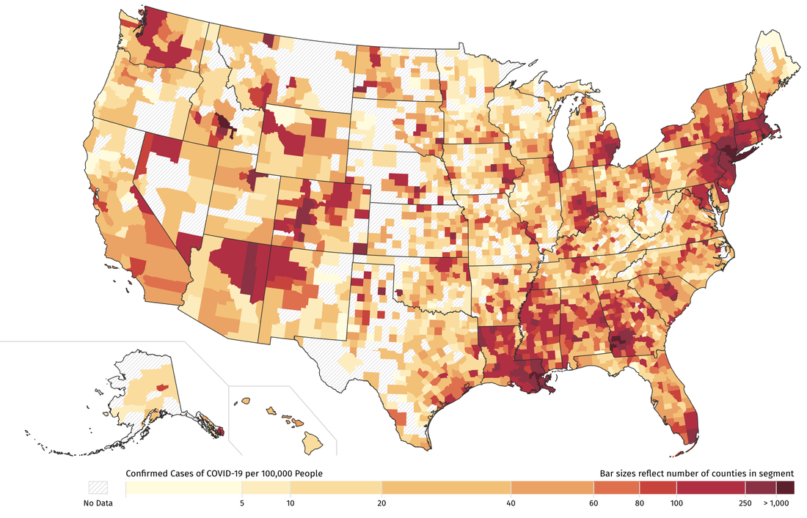
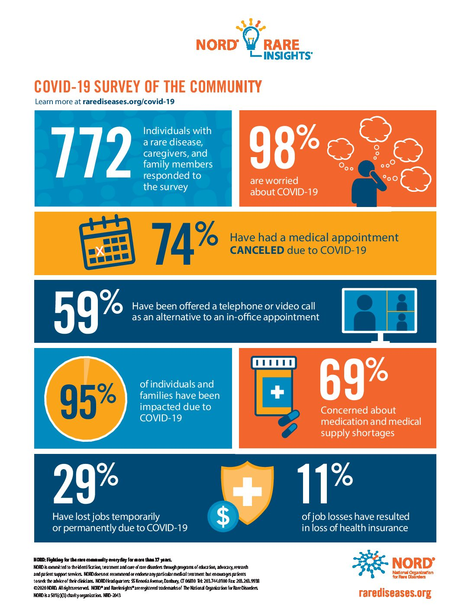
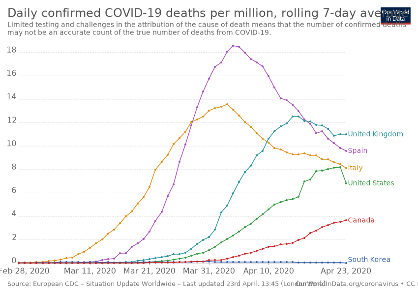

Data visualization is all about communicating information succinctly with graphics and visuals. This is where boxplots, scatterplots, histograms, pie charts, etc. are used to deliver relevant information on a topic to an audience. DV can be a powerful tool for persuading communities, businesses and others, and is an effective way to supporting an argument with facts, if done correctly.
Unfortunately, visuals are easily manipulated, and different conclusions about the same data can be drawn just by changing the scale, the grouping, the method, and even titles. It's important that data communicators use the tools at their disposal to make data more understandable, less confusing, but most importantly, accurate.
The coronavirus pandemic has been an opportunity for data visualizations to shine. Charts of case counts over time are effective at showing the severity of the pandemic from day to day and week to week, and heat maps can illustrate how certain places are doing in comparison to others. Infographics can communicate all kinds of useful information, like guidelines for mask wearing, effective handwashing techniques, and more.
With so much at stake, it's important that pandemic visualizations be designed to appropriately respond to fear and misinformation. Being informed is only as good as the information one is taking in, so manipulative or even malicious statistics should have no place in data visualization.
For more information on the relationship between the coronavirus pandemic response and data visualization, visit Stanford Online. For examples of the effect of misusing data visualization on social media, read more at Health IT Analytics.